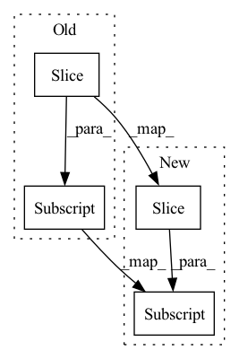

Pattern ID :2707
Before Change
i_w += i
outputs.append(self._ops[i_w](input_i, w1[i_w], w2[i_w]))
inputs.append(sum(consistent_dim(outputs)))
return torch.cat(inputs[-self.n_nodes:] , dim=1)
After Change
outputs.append(self._ops[i_w](input_i, w1[i_w], w2[i_w]))
i_w += 1
inputs.append(sum(dim_assert(outputs)))
return torch.cat(dim_assert(inputs[-self.n_nodes:] ), dim=1)
In pattern: SUPERPATTERN
Frequency: 3
Non-data size: 4
Instances Fragment ID: 9030895
Project Name: woodywff/nas_3d_unet
Commit Name: 232295fabe445c6e66fb1cff24ab27d6dae6feed
Time: 2020-03-15
Author: woodywff@aliyun.com
File Name: cell.py
M Class Name: Cell
N Class Name: Cell
M Method Name: forward(5)
N Method Name: forward(5)
M Parent Class: nn.Module
N Parent Class: nn.Module
M File Name: cell.py
N File Name: cell.py
M Start Line: 75
M End Line: 83
N Start Line: 75
N End Line: 83
Before Change
k = k.transpose(2, 3) // only using transposed k below
// relative distance between two tokens is max total_len
pos = self.pos[-total_len:]
r = self.w_r(pos).view(-1, total_len, embed_dim)
// compute relative positional encodings
b = q @ r.transpose(1, 2)After Change
// compute projections of input and memory embeddings
q = self.w_q(x).view(batch_size, -1, seg_len, embed_dim)
kv = self.w_kv(h).view(2*batch_size, -1, total_len, embed_dim)
r_emb = self.w_r(self.R[-total_len:] ).view(1, -1, total_len, embed_dim)
k, v = kv.chunk(2, dim=0)
// the "XL specific" way of computing the pre-softmax attention score Fragment ID: 9030896
Project Name: augustwester/transformer-xl
Commit Name: 27dc105ac00db033a4576e0591ab2cc548e62071
Time: 2022-11-27
Author: august.wester@gmail.com
File Name: attention.py
M Class Name: MultiHeadAttention
N Class Name: MultiHeadAttention
M Method Name: forward(4)
N Method Name: forward(4)
M Parent Class: nn.Module
N Parent Class: nn.Module
M File Name: attention.py
N File Name: attention.py
M Start Line: 30
M End Line: 52
N Start Line: 28
N End Line: 42
Before Change
outputs.append(self._ops[i_w](input_i, w1[i_w], w2[i_w]))
i_w += 1
inputs.append(sum(dim_assert(outputs)))
return torch.cat(dim_assert(inputs[-self.n_nodes:] ), dim=1)
After Change
outputs.append(self._ops[i_w](input_i, w1[i_w], w2[i_w]))
i_w += 1
inputs.append(sum(outputs)) // debug: dim_assert
return torch.cat(inputs[-self.n_nodes:] , dim=1) // debug: dim_assert
Fragment ID: 9030898
Project Name: woodywff/nas_3d_unet
Commit Name: 22962faeb7ae96bb60c67372e81eecdc36a22e7a
Time: 2020-03-16
Author: woodywff@aliyun.com
File Name: cell.py
M Class Name: Cell
N Class Name: Cell
M Method Name: forward(5)
N Method Name: forward(5)
M Parent Class: nn.Module
N Parent Class: nn.Module
M File Name: cell.py
N File Name: cell.py
M Start Line: 75
M End Line: 83
N Start Line: 75
N End Line: 83